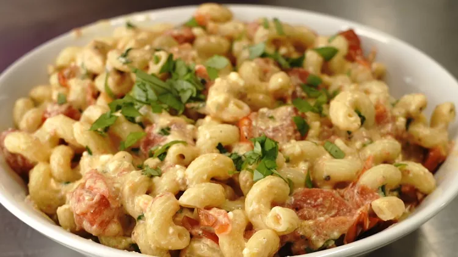

Tomato feta pasta

Description
Super easy dinner recipe that comes straight from Tik Tok.
Ingredients
- Cherry tomatoes
- Feta cheese
- Basil
- Garlic
- Pasta
Steps
- Place tomatoes in a baking dish,
oil them up and season with salt and pepper
-
Nestle a block of feta cheese smack dab in the middle
of the baking dish and bake at 200 degrees C for 30 to 35 minutes
-
Add minced garlic and chopped basil, stir to combine all the
melty, cheesy goodness, and stir in cooked pasta to serve